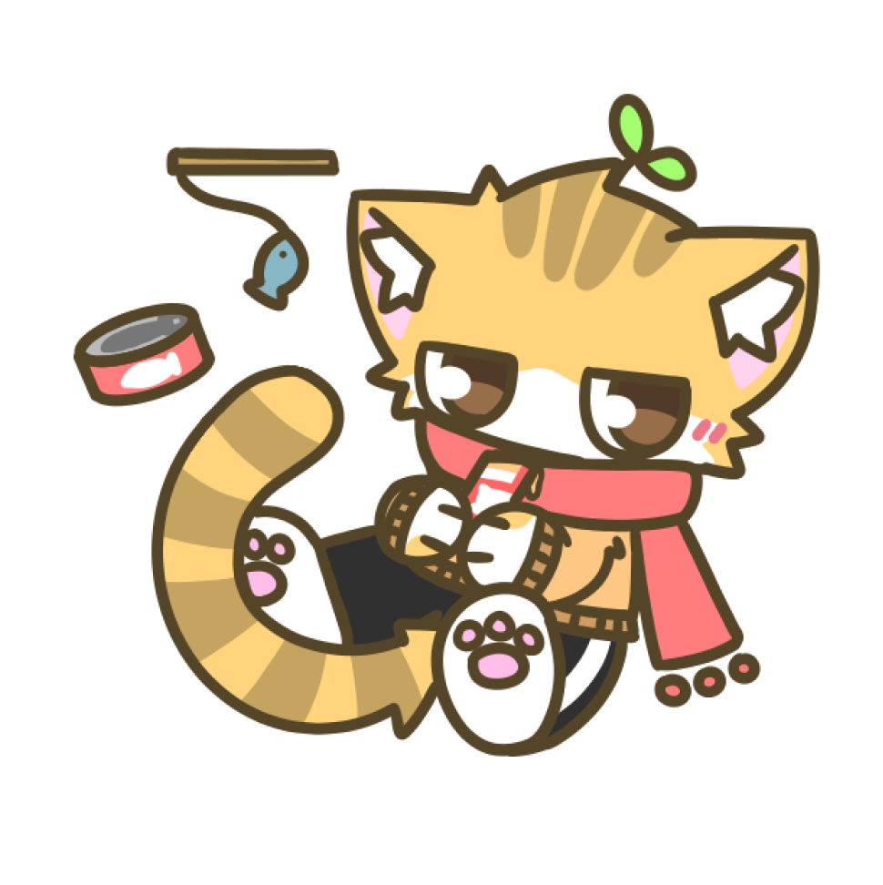

FFD47D
C4A25F
FFD3EE
FF7D7D
A3FF70
| 종족 | 고양이 |
| 좋아하는 것 | 따뜻한 것, 참치캔, 츄르 |
| 싫어하는 것 | 추운 날씨, 과제, "냥빨" |
냥작가
(Neko-San / ニャンさん)
".....야옹."
'냥작가' 라는 필명으로 활동하는 대학생 고양이. 학과는 만화창작과.
모아놓은 돈으로 원룸을 구해 작업실 겸 자취방으로 쓰고 있는 사회 초년생.
이름보단 필명으로 더 잘 알려져 있다. 현실에서도 필명이 편한 듯.
자취방에 “따뜻한 변화” 를 줘 보려고 당X마켓에서 ‘코타츠’를 샀다가,
의도치 않게 따뜻하고 커다란 룸메이트가 생겼다.
표정 변화도, 말도 별로 없어서 차가운 성격이라고 오해하기 쉬우나,
사실은 그 누구보다도 츤데레.
머리 위의 새싹은 무엇이 될지, 냥작가 본인도 모른다고 한다. 가끔 놀랄 때마다 경직되는 걸로 보아 개중에는 바보털이 아닐까 의심하고 있다고.
따뜻한 걸 무지 좋아한다. 추위를 많이 타는 것도 거기에 한몫한다. 실내에서도 항상 매고 있는 붉은 머플러를 벗지 않는다. 머플러가 조금 큰 탓에 항상 입이 가려져 있다.
말보다는 거의 야옹거리는 울음소리나, 귀 움직임이나, 꼬리라던가, (거의 바뀌지 않는) 표정이라던가... 그런 방법으로 의사표현을 한다. 말할 수 없는 건 아니지만, 어째서인지 이야기는 그냥 한 마리 고양이처럼 한다. 아, 고양이 맞구나?